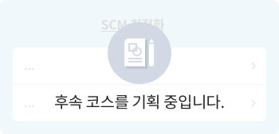

Management College
Deep Change를 위해 내가 하는 일은 어떻게 바뀌어야 할까요?
어떻게 성장할 수 있을까요?
어떻게 성장할 수 있을까요?
Management College는 Deep Change를 위한 Biz. 실행 역량 제고를 위해 6개 Function Group, 1개 Competency 영역의 직무 역량 학습을 제공합니다. Function Group별 지식/전문성 뿐 아니라 여러 Function간 결합을 통한 융합/통합 역량 확보도 계획하고 있습니다.
SCM/Operation
- 고객에게 상품을 적시에, 저렴한 가격으로 제공하고 차별화된 서비스를 제공하기 위한 경영활동 전반을 효율화하는 ‘공급망 관리’에 대해 다룸으로써, 해당 직무 관련 SK 구성원들의 Deep Change 실행력 제고를 위한 체계적인 컨텐츠를 제공합니다.
각 Badge와 코스를 클릭하면 해당 페이지로 이동합니다.


방법론/
적용학습
구매 Advanced

개념 이해
구매 Essentials
- 나는 진정한 구매인인가, 구매의 본질
- - 구매 업무의 이해
- - 구매 업무의 5R 이해
- - 구매 업무의 핵심
- - 발전하고 변화하는 구매관리
- 모르면 큰 코 다치는, 구매 계약/구매 관련 법규 이해
- - 구매 업무 시 지켜야할 윤리
- - 구매 계약의 이해
- - 하도급법과 상생협력법
- - 하도급 대금, 이것만은 알아두자
- - 기술자료제공 요구 금지, 무엇을 조심해야할까
- 나는 무엇을 구매하고 있나, 구매 품목의 이해 및 관리
- - 구매 품목의 분류 및 관리
- - 품목 분류에 따른 자재관리 전략
- - 서비스/용역 품목의 이해
- 방심은 금물, 구매 위험 관리
- - Intro : 타이레놀 위험 관리
- - 구매 위험 관리 및 조달 연속성 계획
- - 구매 자제 가격 변동 위험 관리
- - 팬데믹 시대와 구매 위험관리
- 디지털 구매 혁신
- - 디지털 혁신의 핵심적 이해
- - 디지털 구매 혁신방안
- 구매 업무 프로세스 이해 및 활용
- - 구매업무프로세스의 이해와 활용
- - 공급자 탐색 및 평가
- - RFP, RFQ 작성방법과 유의점
- - 입찰 절차 관리 및 평가
- - 공급자 선택 및 계약
- - PO 작성의 이해
- - 계약 후의 구매활동
- 알수록 돈버는, 구매인을 위한 재무/회계/물류
- - 계좌등록관리
- - Incoterms 2020 이해와 적용
- - 공급사 신용 및 재무분석
- - 무역보험/수입보험 실무
- - 수입통관, 관세와 부가세
- 구매 원가 관리
- - 구매 원가의 전략적 의미
- - 가격 분석 및 가격 적정성 검토
- - 원가 분석의 의미와 원가 분석 기법
- - TCO ( Total Cost of Ownership ) 이해
- - TCO ( Total Cost of Ownership ) 활용
- - 목표원가 및 가치분석
- 기업의 사회적 가치와 구매
- - 구매와 ESG, SV 실천 (1)
- - 구매와 ESG, SV 실천 (2)
